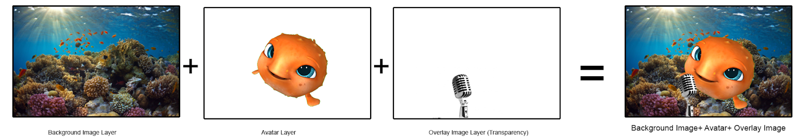
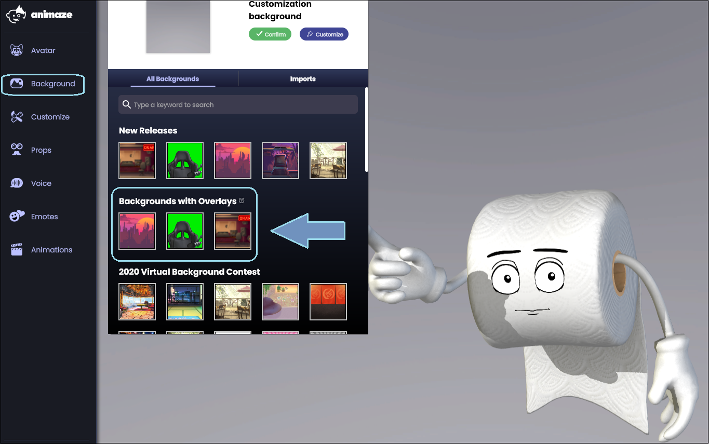

Animaze Desktop: How can I use animated backgrounds? (backgrounds with overlays)
As of February 2021, the Animaze app is offering the possibility to add background with overlays to your Animaze scene. The backgrounds with overlays give you the opportunity to put your avatar in between two images, one being the backdrop image and the other one being an overlay image, with a transparency channel.

The backgrounds with overlays can be loaded in the Animaze app by accessing the background section and then scrolling through until getting to the designated area

You will be able to choose from the following types of background types:
-
Backgrounds with overlays made out of 2D static images
-
Animated elements powered by Live2D:
-
Loopable background animations
-
Background elements linked to your avatar’s movements
-
Special actions in animated backgrounds and foregrounds
You can find how to make your own background with overlay right here. Here are the sources for the avatars that are already loaded in the Animaze app